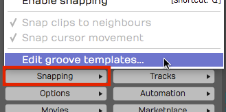

Quantising MIDI Notes¶
Quantising corrects the timing of your MIDI performances. At its simplest, it snaps each note to the nearest position on a grid defined by the bars and beats of your song. Waveform sets that grid in musical increments such as quarter notes and eighth notes, but expresses them as divisions of a beat.
Groove templates take quantising further. They quantise to timing that isn't perfectly straight, most often to add swing, so you can give a performance the feel you want.
How to Quantise¶
In a MIDI clip, select the notes you want to quantise. To quantise all of them, use select all (Cmd + A / Ctrl + A). Then click Quantise in the Actions panel or in the MIDI editor's toolbar to see the quantise actions.

MIDI Quantise Actions
There are five quantise actions: Quantise note start times, Quantise note lengths, Quantise note start and end times, Quantise note starts, leaving ends intact and Quantise note ends, leaving starts intact. The most common is the first, Quantise note start times. To complete the action, pick the beat division to use.
The beat divisions can be a little confusing, because Waveform shows musical divisions as fractions of one beat. For example, to quantise to eighth notes in 4/4 time, select To nearest 1/2 beat, since half a beat is an eighth note. To quantise to sixteenth notes, select To nearest 1/4 beat.

MIDI Notes Before Quantising

MIDI Notes After Quantising Note Starts to Nearest 1/2 Beat
Quantising tightens the performance straight away by snapping each note to the nearest increment of the division you chose.
📝 Note: If a note was played so far off that it snaps to the wrong position, fix it by hand in the MIDI editor.
💡 Tip: Some styles of music rely on perfectly quantised timing and others don't. To fix timing errors but keep a more natural feel, edit the timing note by note with Snap turned off. Groove quantising also gives you other options for "quantising with feel"; see Quantising with Groove.
Quantising Note Lengths¶
When you quantise note lengths, each note becomes the full length of the chosen note value.

Note Lengths Quantised to 1/2 beat
On a piano part, this can sound choppy and unnatural. If the playing is that inconsistent, try quantising the note lengths to 1/4 beat (a sixteenth note) instead.
Quantising note lengths usually isn't necessary. It can help on drum parts, because it lets each drum hit play out its full attack and decay.
Quantising with Groove¶
Quantising with groove can be as simple as choosing a preset or as detailed as programming your own groove template. You can apply groove to both MIDI clips and Step clips (see Step Clips).
To start with the basics, select the notes to quantise and click Apply Groove in the Actions panel, or Groove in the MIDI editor's toolbar.

Apply Groove in the Actions panel
A menu of groove templates appears, each applying fine adjustments to the timing. When you choose one, a Groove strength window asks how strongly to apply it (0 to 100). Waveform remembers the last strength you used. The older templates with a fixed strength in their name (such as Swing 1/2 60%) are in the Legacy groove templates submenu, and apply straight away.

Apply Groove Presets in Options
The most common use is swing: delaying the eighth notes that follow the four main beats of a bar. For standard swing, choose Swing 1/2, where 1/2 means half a beat, or eighth-note swing in musical terms. For a groovy swing, try Swing 1/2 with a strength of 60.

Groove Presets for Swing
📝 Note: In 4/4 music, eighth note timing is counted 1 & 2 & 3 & 4 &. In swing timing, the "&" beats are delayed. The groove strength sets how much delay, from subtle (low values) to dramatic (high values).

Before Applying Groove

After Applying Groove: Swing 1/2 at 60% Strength
After you apply swing, all the "and" notes sit a little late. Waveform also adjusts the note lengths to match, as shown above.
Clip Quantise and Groove¶
Quantise and Apply Groove change the selected notes. A MIDI clip can also quantise and groove its notes as it plays, leaving the notes themselves untouched. Select the clip and use these settings in the Actions panel:
Quantise: The quantise resolution the clip applies on playback.
Quantise Amount: How tightly the notes are pulled to the Quantise grid. (Range: 0-100)
Groove: The groove template the clip applies on playback.
Groove Amount: How strongly the groove is applied. Shown only when the chosen template takes a strength. (Range: 0-100)
Because the notes don't move, you can change or remove these at any time and the original timing comes back.
Defining Groove Templates¶
For more control, build your own grooves in the Groove Template Editor. Choose Edit groove templates... at the bottom of the Apply Groove menu, or View > Open Groove template editor in the main menu.

View > Open Groove template editor
Click any of the presets in the editor to see how it's built.

Groove Template Editor
In the image above, the legacy Swing 1/2 60% template is selected, which matches the swing used for the examples in this chapter. A groove template consists of a pattern length, a note subdivision and the timing for each note. For each step of the pattern, you choose how far that note falls 'early' or 'late' relative to perfect timing.

Swing 1/2 60% Template Example
The figure above shows a basic swing beat, with each 'and' eighth note delayed. The more delay you put on those eighth notes, the stronger the swing feel.
Complex Groove Templates¶
A groove template can have as many steps as you like, so you can dial in exactly the feel you want. For example, to vary the swing within a bar, create a template with eight notes, each with a slightly different swing.

Groove Template with Variable Swing
You can also create a groove that pushes the timing over two bars to add excitement and tension, like the Fast Slow 2 template.

Fast Slow 2 Groove Template
💡 Tip: A 'No Groove' template is a handy way to remove the effect of a groove, particularly on Step clips; see Step Clips.

Creating a 'No Groove' Template
Managing Groove Templates¶
The Groove Templates window has buttons to Create a New Template...,
Rename Template..., Import Template... and Export Template....
Exported templates have the .trkgroove file extension, and you can share
them with other Waveform users or installations.

Create, Rename, Import, or Export Groove Templates
While editing a groove template, you can reset it with Reset Template.... This removes the early and late timing from the pattern but leaves the length and note division settings as they are.

Resetting a Groove Template
To delete a groove template you don't need, use Delete Template.

Deleting a Groove Template
Making Templates From a Performance¶
You can also capture the timing of a real performance as a template. Select a MIDI clip and click Extract groove from MIDI clip in the Actions panel. Waveform asks for a name, then saves the timing of the clip's notes as a new groove template that you can apply to other MIDI clips, Step clips and audio. For audio, Groove Doctor's Extract groove mode does the same from the beat transients; see Groove Doctor (Waveform Pro, or with the Recording Engineer Expansion).
Moving On¶
Next, see Step Clips.